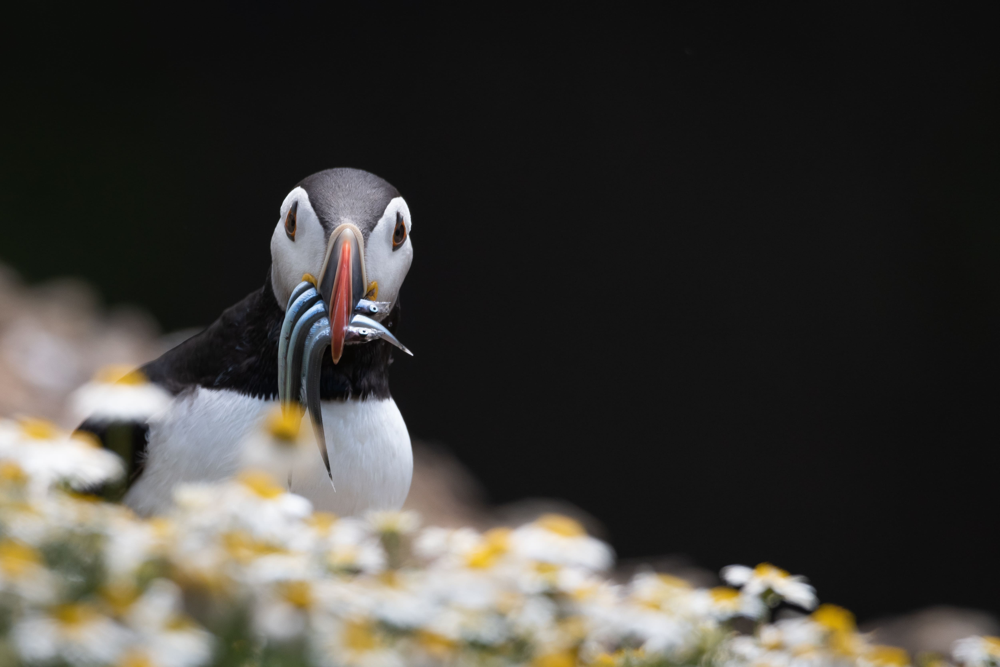
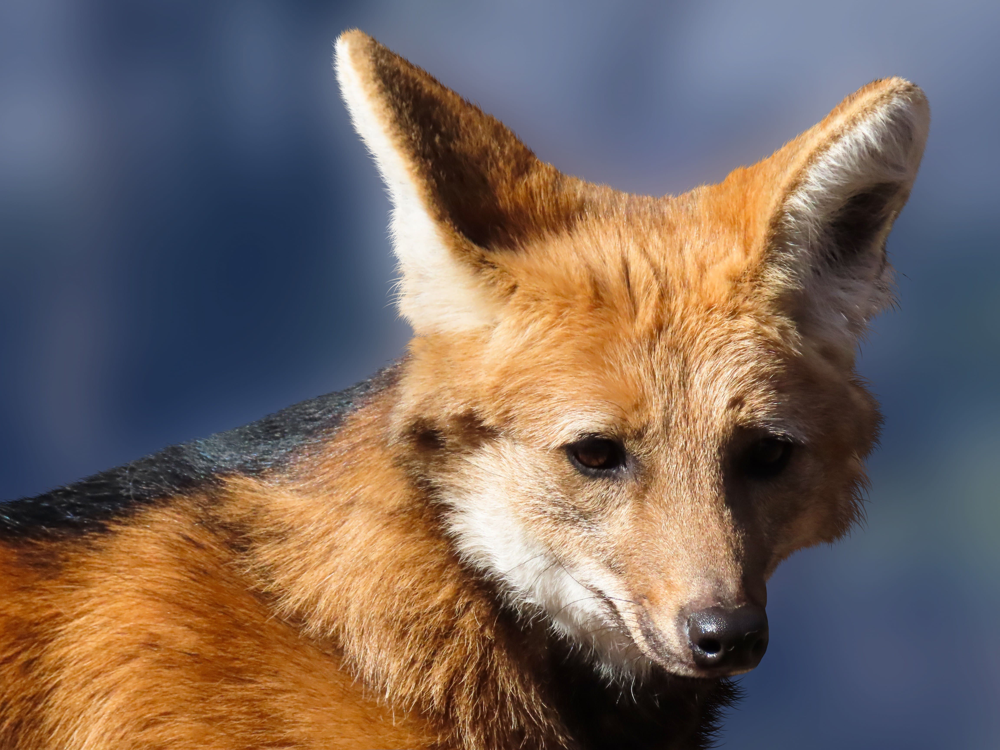
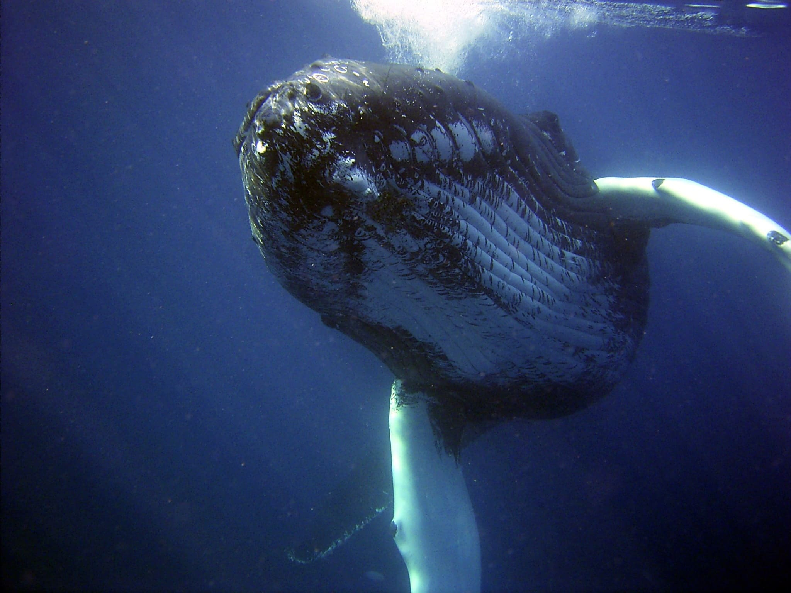
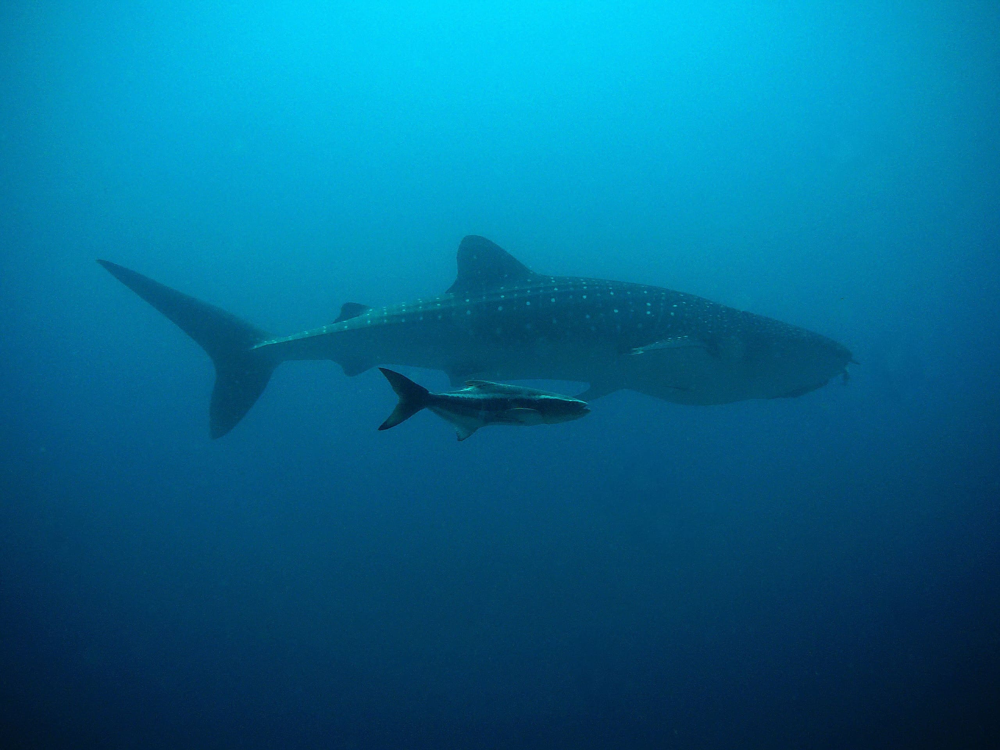

Vida Terrestre
Proteger, restaurar e promover o uso sustentável dos ecossistemas terrestres, gerir de forma sustentável as florestas, combater a desertificação, travar e reverter a degradação dos solos e travar a perda da biodiversidade


Animais em extinção





